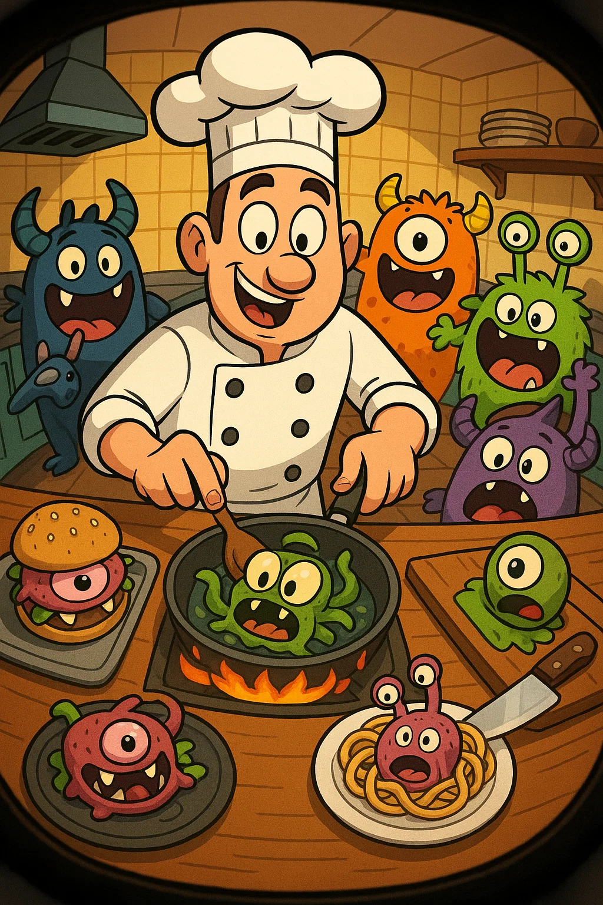
VR Arcade pitch
Monster Munchies
Cook fast. Cook weird. Feed the fiends. The Core Fantasy You’re the sole chef at The Midnight Diner , a cursed culinary …
Game pitches dreamed up by our students — the hook, the gameplay, and the concept art. A pitch is where every project starts.
Short, punchy VR experiences — the original student pitches (~2 yrs old), kept as starting points.

Cook fast. Cook weird. Feed the fiends. The Core Fantasy You’re the sole chef at The Midnight Diner , a cursed culinary …
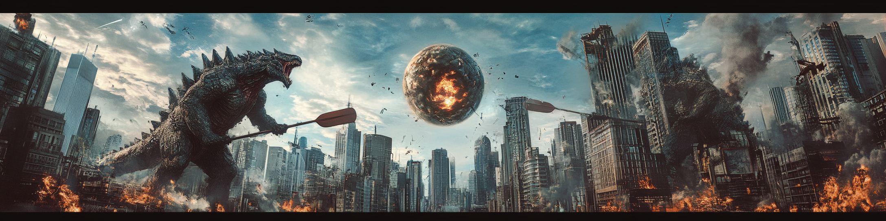
Pitch Overview Get ready for the most destructive, chaotic, and utterly ridiculous VR Pong experience ever created. In K…
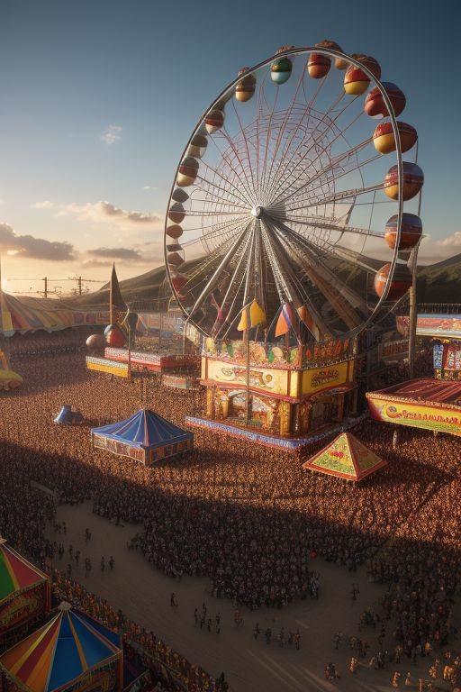
Players: Single-player Duration: 1-5 minutes Premise: A carnival out in the country with a bunch of fun games. Warm colo…
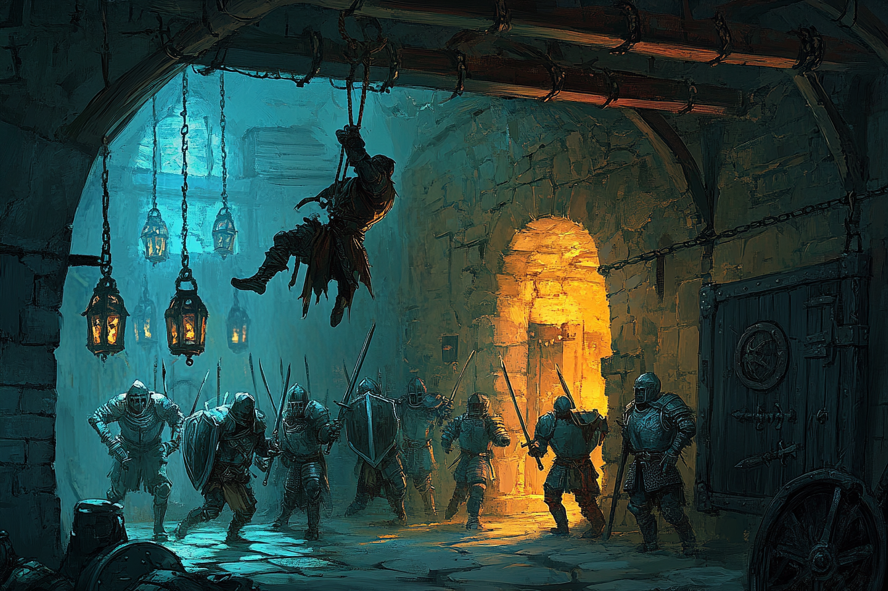
A VR Dungeon-Crawling Disaster Simulator The Premise You are the clever rogue reluctantly hired by a band of big, dumb, …
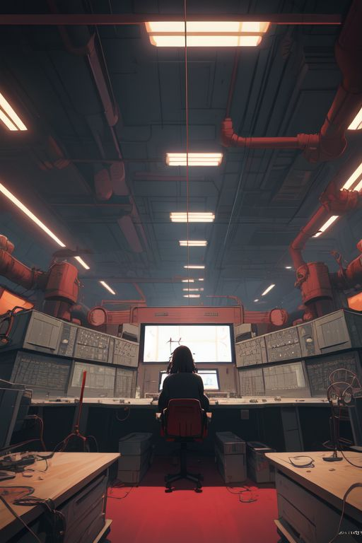
Players: Single-player Duration: 1-5 minutes Premise: The control room in a big dystopian factory in the 20th century. V…
VR Arcade Pirate Fencing Rhythm Game Fight to the Beat, Fence for Glory! Overview Step into the boots of a fearless pira…
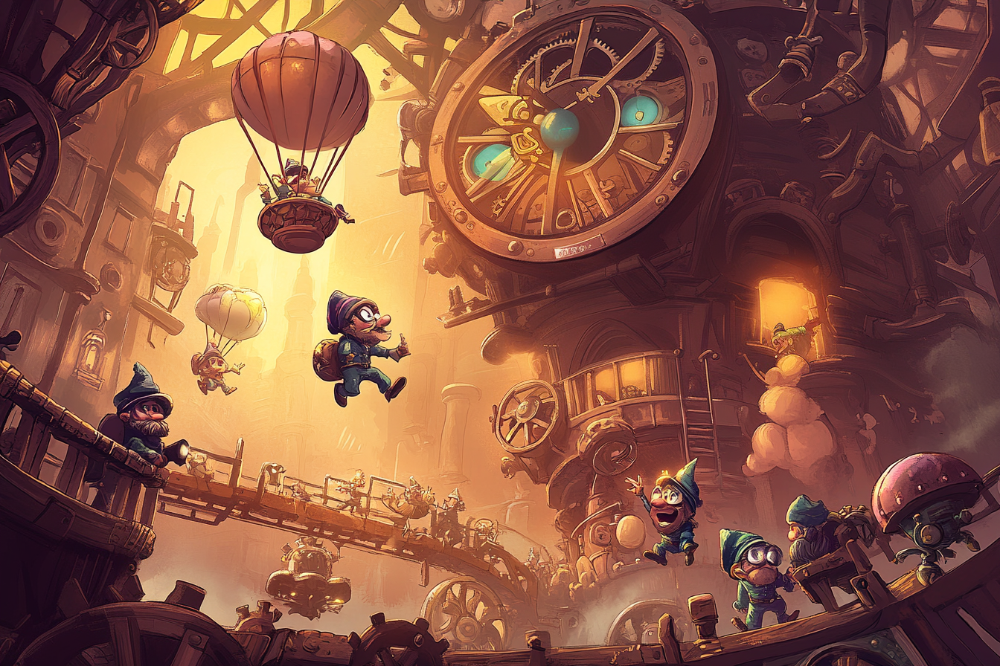
Game Overview Tick Tock Tinkerers is a fast-paced, cooperative multiplayer VR game where players take on the role of ste…
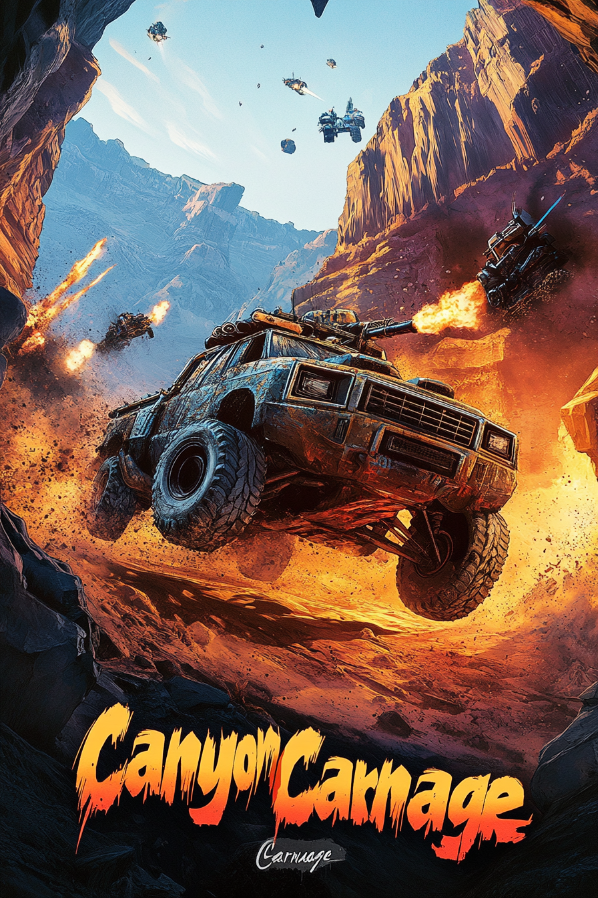
"Dude, You HAVE to Try Canyon Carnage !" Okay, imagine this: One player is in a full racing seat with a steering wheel, …
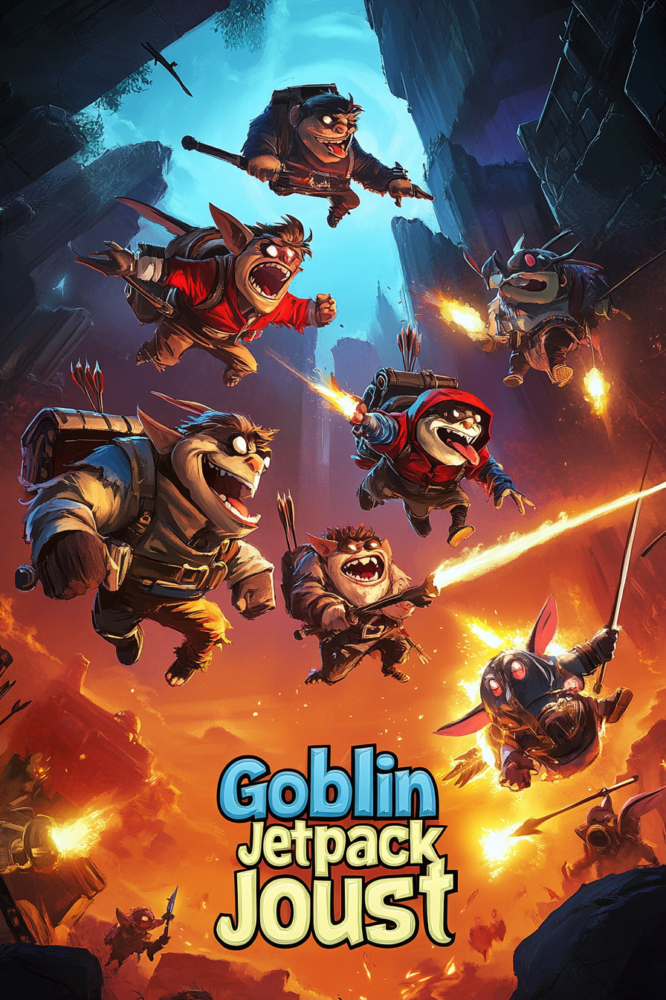
Genre: VR Arcade Party Battle Players: 2-4 multiplayer Duration: 5 minutes Premise: It’s chaos in the goblin scrapyard a…
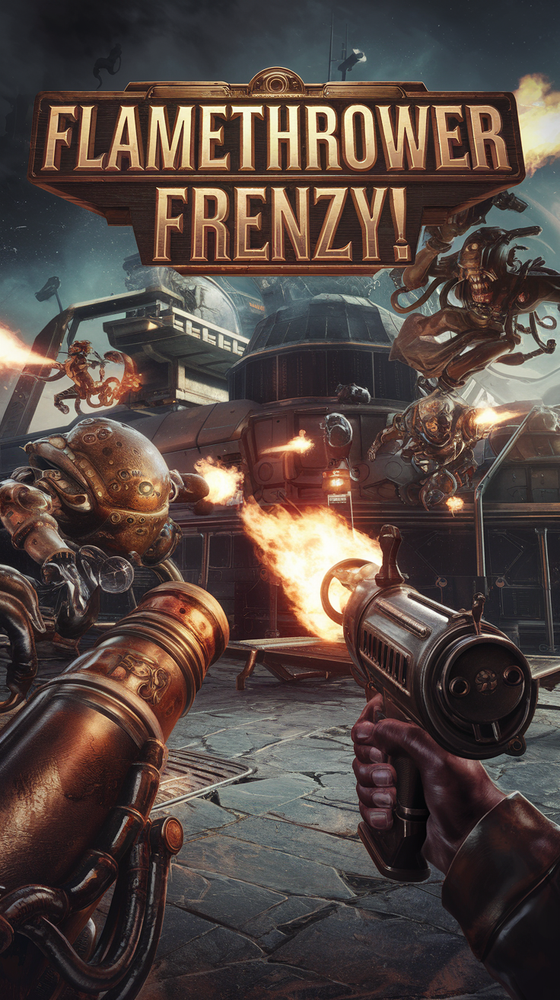
Players: Single-player Duration: 5 minutes Premise: Stranded on a floating steampunk pirate fortress in space, you are t…
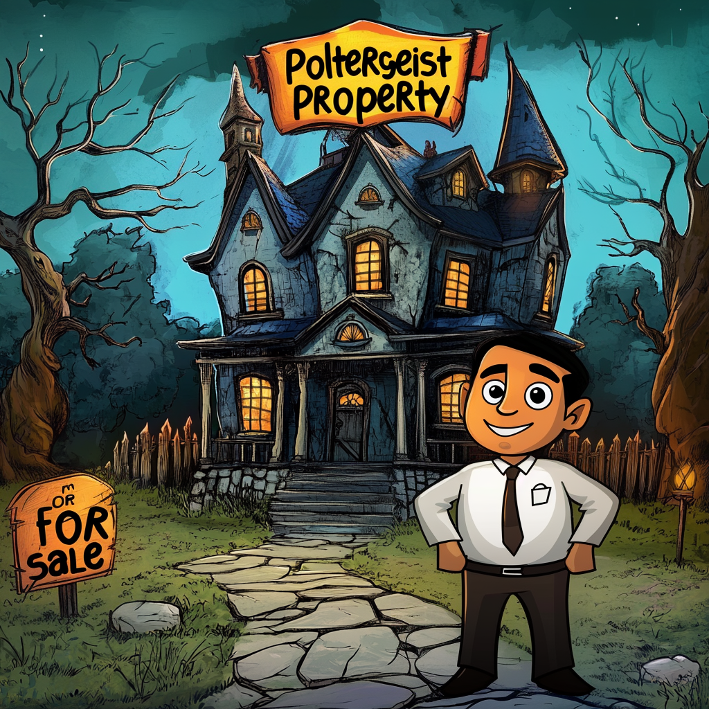
“Selling a haunted house was never this wild! With Poltergeist Property , you’ll face mischievous ghosts and hilarious s…
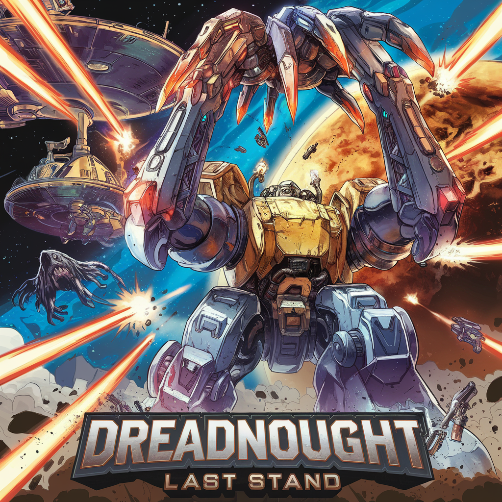
A VR Arcade Mech Shooter with Giant Claw Combat Concept Overview The galaxy is under siege. As the last surviving dreadn…
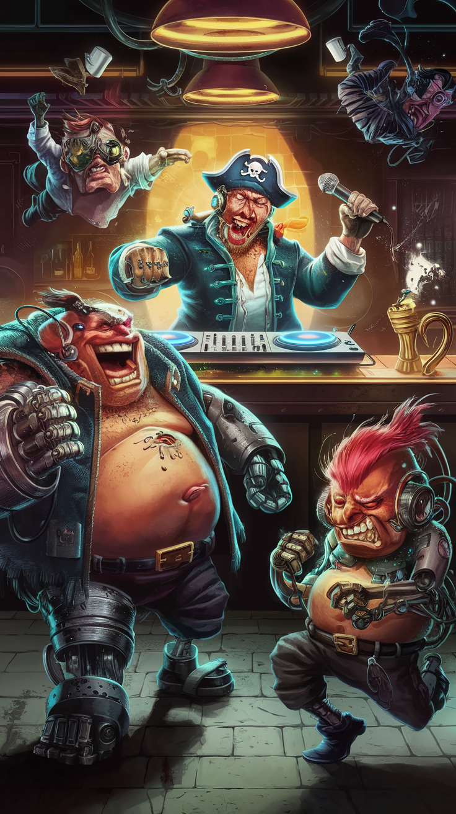
A VR Rhythm-Based Insult Combat Game Overview You’re the DJ and last line of defense in the infamous Black Hole Dive , a…
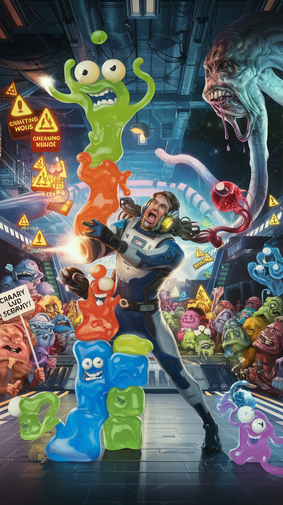
A Wobbly, Bizarre VR Tetris Shooter Experience! Game Concept: In JellyTetrageddon , you’re thrown into an intergalactic …
New pitches built around large language models — smarter partners, enemies, and game masters.
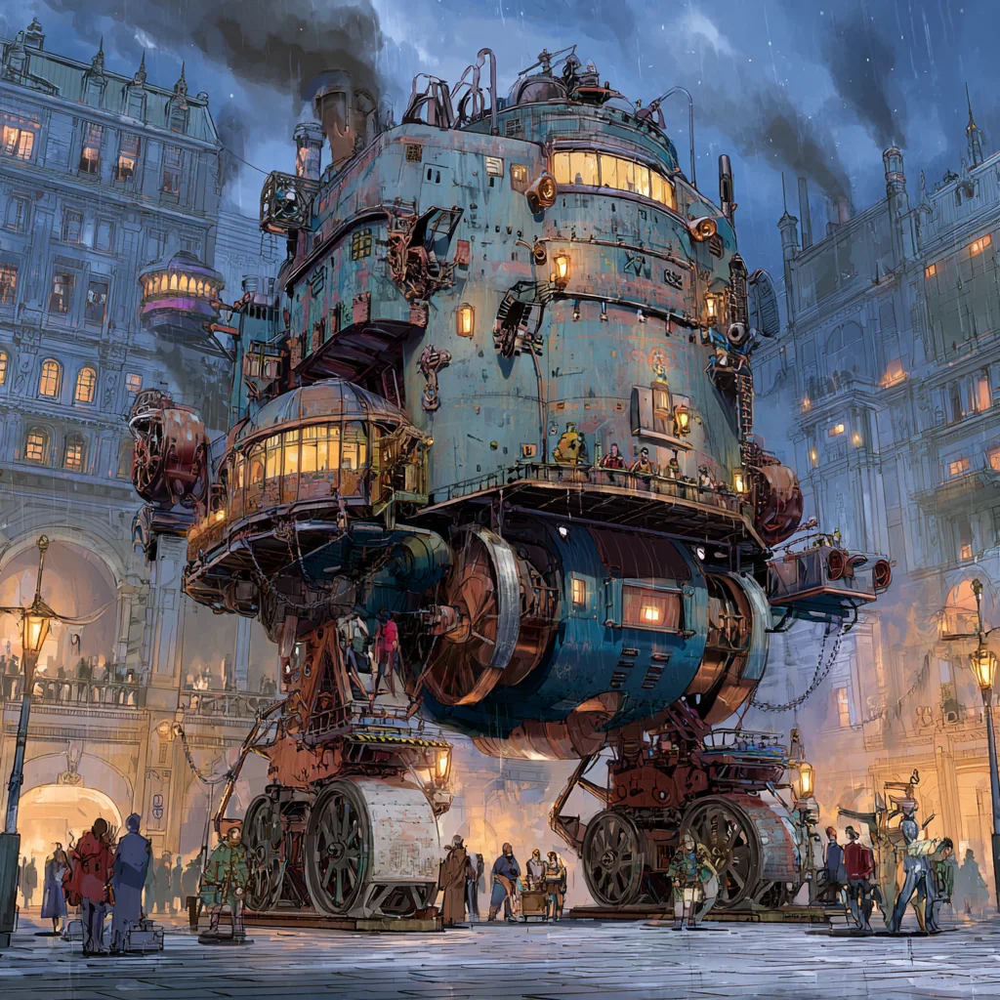
A survival RPG where the health bar lives on the machine, not the hero — a thinking steampunk war-tank, its crew, and an LLM Game Master that weaves missions from fragments.
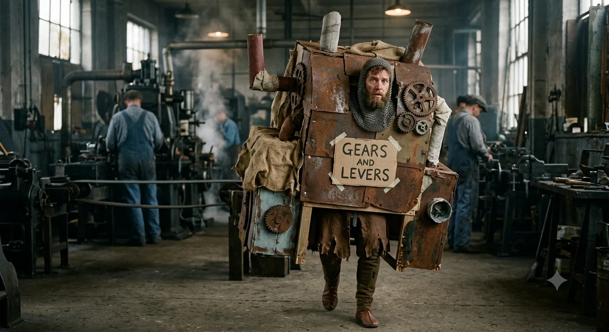
A medieval co-op where you're the factory AI and your "machines" are monsters in costumes. Build and bluff by day; survive your friends' machines by night. Powered by four LLM roles, including a day-time Inspector you must talk past.